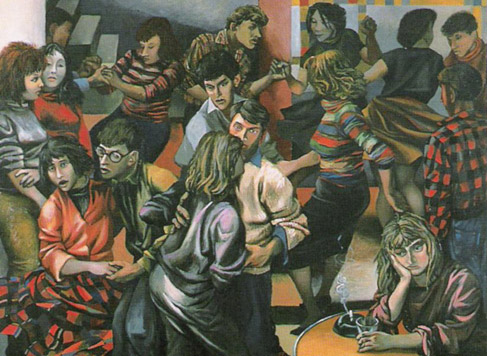

In quest'opera viene rappresentato un momento di svago collettivo in una sala da ballo. La folla è composta, come spessissimo capita nei quadri di Guttuso, da persone reali che frequentano il suo ambiente. I colori dominanti sono cupi, tranne un punto luminoso in primo piano, che proietta una luce tenue su una donna che fuma una sigaretta.
Boogie Woogie - Renato Guttuso
1953
Ti piace quest'opera?